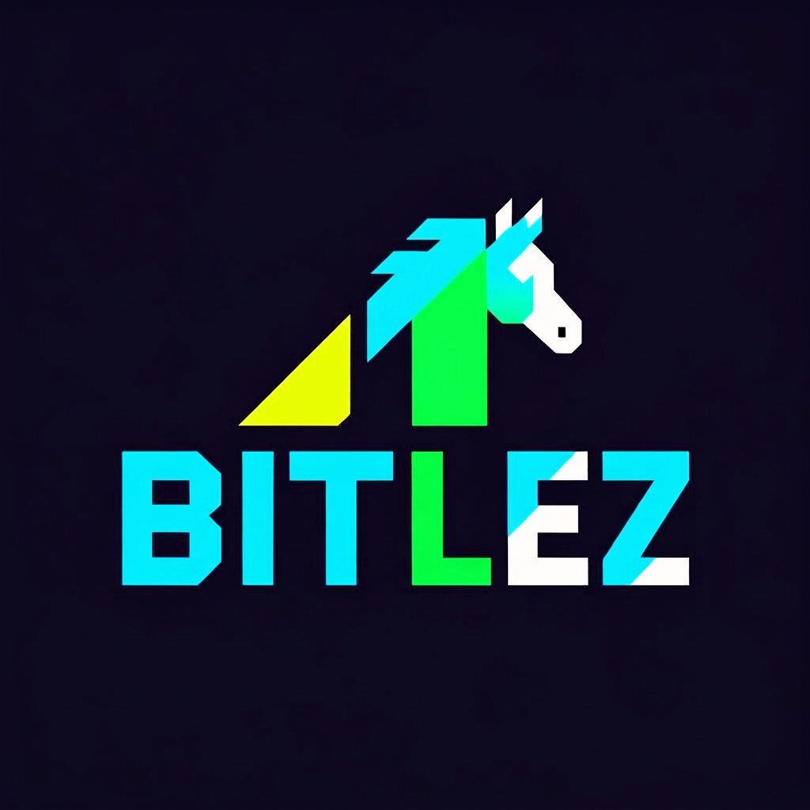
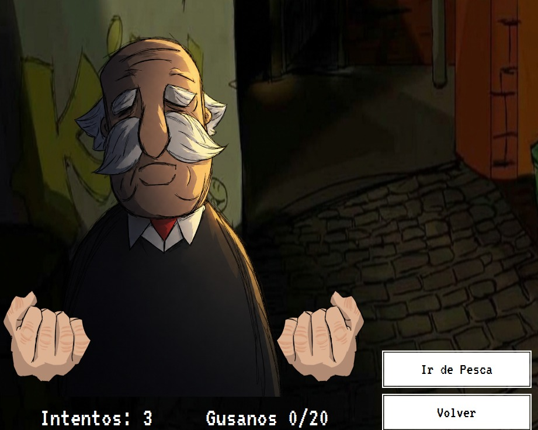
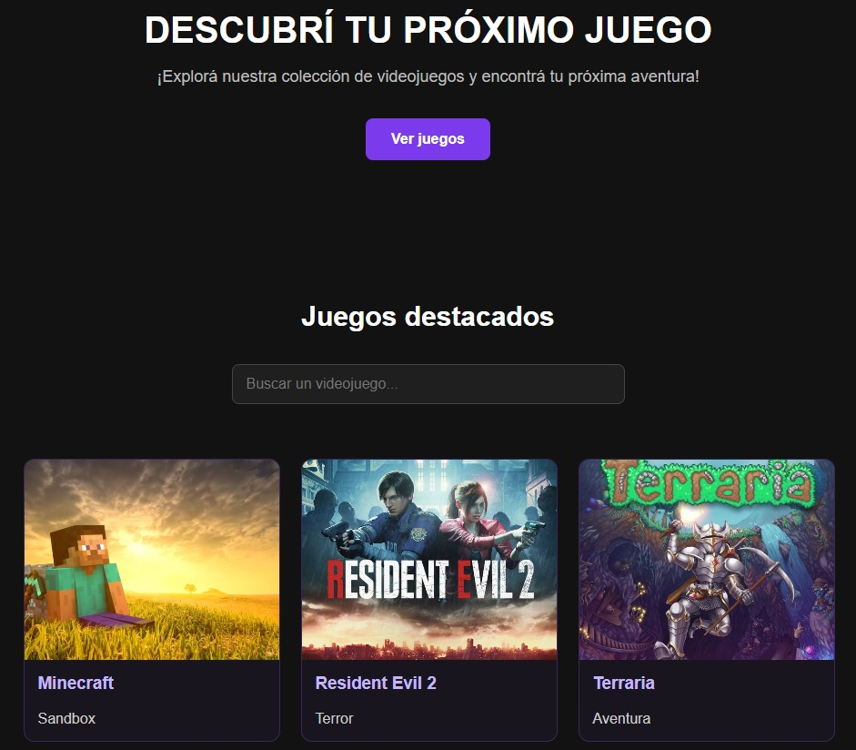
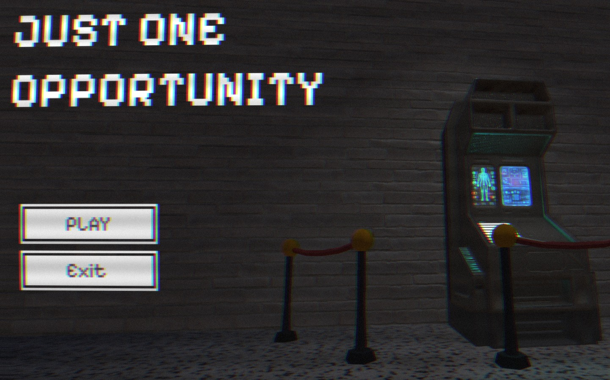

Hola, soy Bitlez
Desarrollador independiente de Argentina

Sobre mí
¡Hola! Soy Santiago Guinel, mejor conocido como Bitlez. Un desarrollador independiente con muchas ganas de crecer, aprender y abrirme camino en el mundo de la programación.
Me apasiona especialmente el desarrollo de videojuegos, aunque también disfruto creando aplicaciones y páginas web. A lo largo de mi formación he trabajado en distintos proyectos personales y académicos, explorando diferentes tecnologías y poniendo a prueba mis conocimientos.
Actualmente curso el último año de la Tecnicatura en Programación en una escuela técnica de Argentina. Mi objetivo es seguir perfeccionando mis habilidades y transformar nuevas ideas en proyectos propios.
Mis Proyectos

Worms 2 The Revenge
Videojuego de escritorio desarrollado en Apache Netbeans 30
Java JavaFX
GameHub
Plataforma web de videojuegos con registro, perfiles y catálogo.
HTML CSS PHP MySQL JavaScript
Just One Opportunity
Videojuego indie de terror con ambientación retro.
Desarrollo de videojuegos IndieContacto
¿Tenés alguna propuesta, consulta o proyecto en mente? Podés escribirme a:
guinelsantiago08@gmail.com